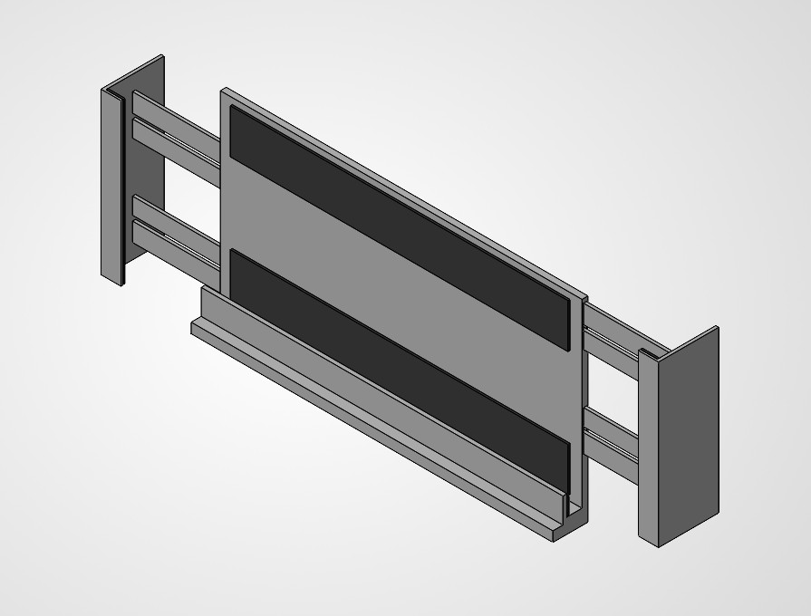
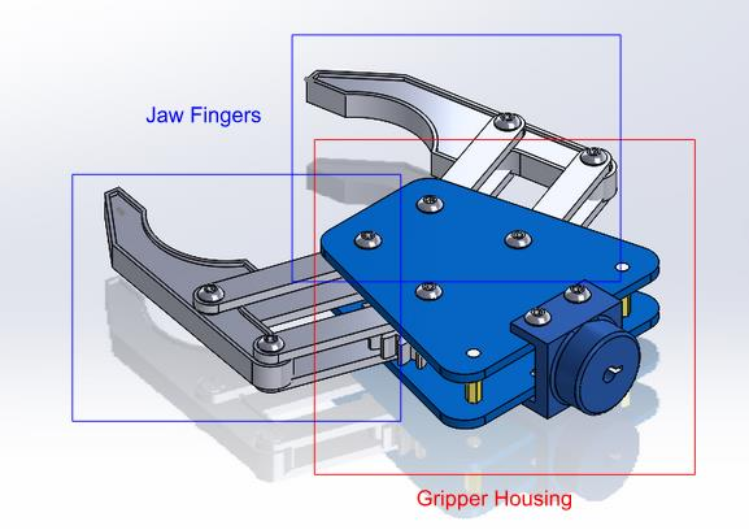
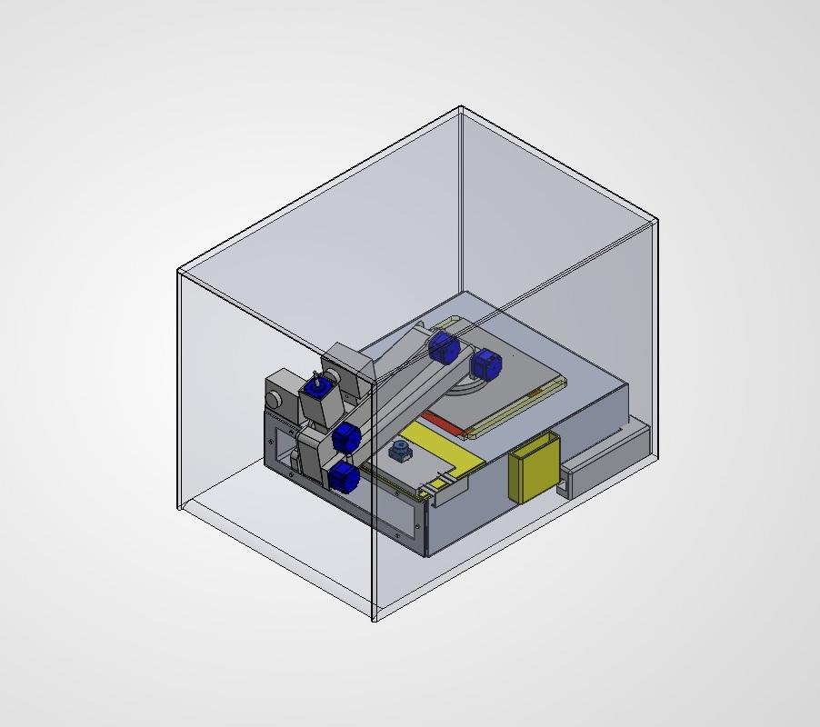

The Transforming Home Assistance Robot is a robot design to assist the elderly in home tasks. It is designed to transform for easy storage, and fit into a dock. The robot arm fits a interchangable end effector that can be a claw arm for grabbing objects, or a tablet holder. For locomotion, the robot sports 4 wheels on its undercarriage. The arm transforms using a telescopic component and a jack-knife joint. Full engineering drawings were produced alongside a complete report documenting the features of the robot.
Robot Overview

Tablet Holder

Labled Claw Arm

Robot Dock with Robot (Some parts set to transparent for easier viewing)
The biggest challenge was designing to robot with consideration of the given constraints. The hardest was the consideration of the space constraints. The dock was designed to fit under a generic office table, and the robot was design to reach over said table. This problem was resolved with the integration of a transforming component, consisting of the telescopic and jack-knife components. This allowed the robot arm to fit within the space constraints, while providing a opportunity to creativly think about solutions.
This project taught me about the mechanical design process from scratch, instead of reverse engineering. I learned about part sourcing, primarly through the website McMaster-Carr. In addition, I was advised on SolidWork practices, engineering drawings, and manufacturing considerations by a industry engineer.
Guys the thermal drill go get it